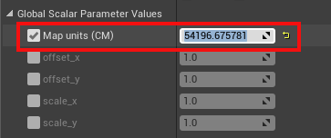
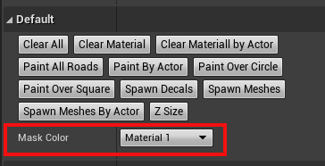
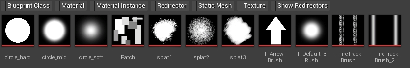
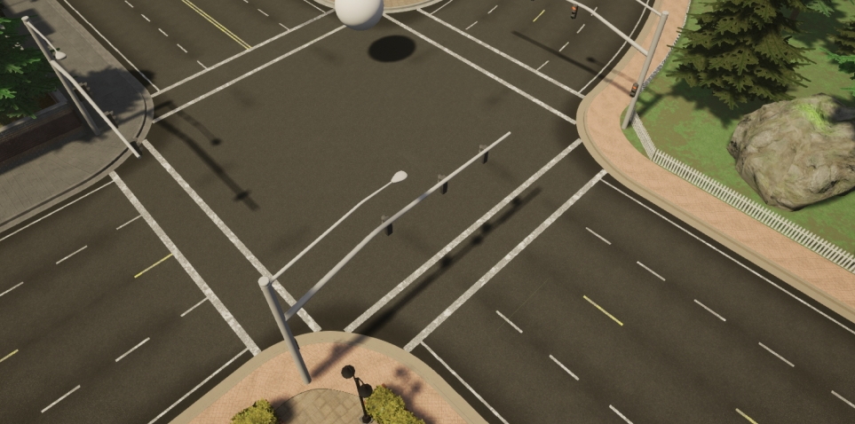
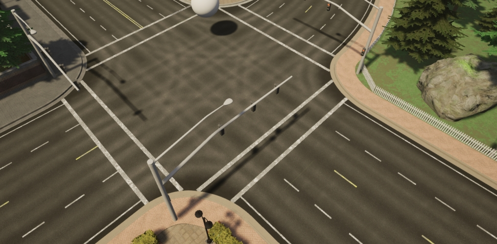
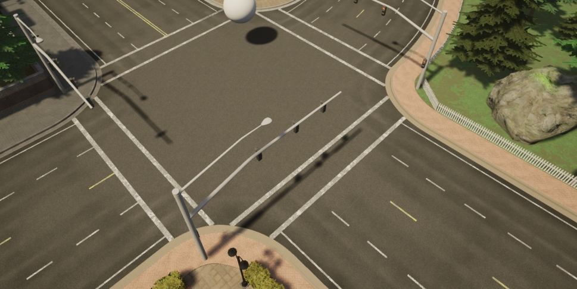

自定义地图：道路画家¶
本指南解释了什么是道路绘制工具，如何使用它通过组合不同的纹理来自定义道路的外观，如何添加贴花和网格以及如何根据道路纹理更新车道标记的外观。
什么是道路画家？ ¶
道路画家工具是一个使用 OpenDRIVE 信息快速绘制道路的蓝图。它采用主材质并将其应用到道路的渲染目标以用作画布。主材质由一系列材质组成，这些材质可以使用画笔混合并用作蒙版。无需应用光度测定技术，也无需考虑几何体的 UV。
在你开始之前 ¶
道路油漆工使用 OpenDRIVE 信息来油漆道路。确保您的.xodr文件与地图同名，这样才能正常工作。
建立道路画家、掌握材质和渲染目标 ¶
1. 创建 RoadPainter 参与者。
- 在 内容浏览器 中，导航至
Content/Carla/Blueprints/LevelDesign。 - 将
RoadPainter拖入场景中。
2. 创建渲染目标。
- 在 内容浏览器 中，导航至
Content/Carla/Blueprints/LevelDesign/RoadPainterAssets。 - 右键单击
RenderTarget文件并选择Duplicate。 - 重命名为
Tutorial_RenderTarget。
3. 创建主材质实例。
- 在 内容浏览器 中，导航至
Game/Carla/Static/GenericMaterials/RoadPainterMaterials。 - 右键单击
M_RoadMaster并选择 Create Material Instance 。 - 重命名为
Tutorial_RoadMaster。
4. 重新校准 Map Size (Cm) ，使其等于地图的实际尺寸。
- 选择
RoadPainter场景中的参与者。 - 转到 Details 面板并按 Z-Size 按钮。您将看到 Map Size (Cm) 中的值发生变化。

5. 同步 RoadPainter 和 Tutorial_RoadMaster 之间的地图尺寸。
- 在 内容浏览器 中，打开
Tutorial_RoadMaster。 - 复制上一步中 Map Size (Cm) 的值，并将其粘贴到
Tutorial_RoadMaster窗口中的 Global Scalar Parameter Values -> Map units (CM) 。 - 点击保存。

6. 创建道路画家和主材质之间的通信链接。
Tutorial_RenderTarget 将是道路画家和 Tutorial_RoadMaster 之间的通信纽带。
- 在
Tutorial_RoadMaster窗口中，将Tutorial_RenderTarget应用于 Global Texture Parameter Values -> Texture Mask 。 - 保存并关闭。
- 在主编辑器窗口中，选择道路画家参与者，转到 Details 面板并将
Tutorial_RenderTarget应用到 Paint -> Render Target 。
准备主材质 ¶
您创建的 Tutorial_RoadMaster 材质，包含基础材质、额外材质信息以及将通过您的Tutorial_RenderTarget。您可以配置一种基础材料和最多三种附加材料。

要配置材料，请双击 Tutorial_RoadMaster 文件。在出现的窗口中，您可以根据需要为每种材料选择和调整以下值：
- 亮度(Brightness)
- 色调(Hue)
- 饱和度(Saturation)
- AO Intensity
- 法线贴图强度(NormalMap Intensity)
- 粗糙度对比(Roughness Contrast)
- 粗糙度强度(Roughness Intensity)
您可以通过选择以下值并在搜索框中搜索纹理来更改每种材质的纹理：
- Diffuse
- Normal
- ORMH
探索 Game/Carla/Static/GenericMaterials/Asphalt/Textures 中可用的一些 Carla 纹理。
描绘道路 ¶
1. 在道路画家和道路之间创建链接。
- 在主编辑器窗口中，在 World Outliner 搜索框中进行
Road_Road搜索。 - 按
Ctrl + A选择所有道路。 - 在 Details 面板中，转到 Materials 部分并应用
Tutorial_RoadMaster到 Element 0、 Element 1、 Element 2 和 Element 3。
2. 选择要定制的材质。
我们添加的 Tutorial_RoadMaster 单独应用于道路，并使用画笔工具配置应用程序。要应用和自定义材质：
- 选择道路油画家参与者。
- 在 Details 面板中，在 Mask Color 下拉菜单中选择要使用的材质。

3. 设置画笔和模板参数。
在 GenericMaterials/RoadStencil/Alphas 中有多种模板可供选择。模板用于根据您的需要绘制道路，可以使用以下值进行调整：
- Stencil size — 画笔的尺寸。
- Brush strength — 轮廓的粗糙度。
- Spacebeween Brushes — 笔划之间的距离。
- Max Jitter — 笔划之间画笔的大小变化。
- Stencil — 要使用的画笔。
- Rotation — 应用于笔画的旋转。


4. 将每种材料涂抹到道路的所需部分。
通过 Details 面板的 Default 部分中的按钮选择应用所选材质的位置：
- Paint all roads — 粉刷所有道路。
- Paint by actor — 绘画特定的、选定的参与者。
- Paint over circle — 使用圆形图案进行绘制，有助于提供变化。
- Paint over square — 使用正方形图案进行绘制，有助于提供变化。
此部分还包含用于删除已应用更改的选项。
- Clear all — 擦除所有绘制的材质。
- Clear materials — 删除当前活动的材料。
- Clear material by actor — 删除最接近所选参与者的材质。

5. 添加贴花和网格。
您可以在 Content/Carla/Static/Decals 和 Content/Carla/Static 中探索可用的贴花和网格。通过扩展并添加到 Decals Spawn 和 Meshes Spawn 数组，将它们添加到道路绘制器中。对于每一项，您都可以配置以下参数：
- Number of Decals/Meshes - 要绘制的每个贴花或网格的数量。
- Decal/Mesh Scale — 每个轴的贴花/网格比例。
- Fixed Decal/Mesh Offset — 每个轴与车道中心的偏差。
- Random Offset — 每个轴与车道中心的最大偏差。
- Decal/Mesh Random Yaw — 最大随机偏航旋转。
- Decal/Mesh Min Scale — 应用于贴花/网格的最小随机比例。
- Decal/Mesh Max Scale — 应用于贴花/网格的最大随机比例。

配置好网格和贴花后，通过按Spawn decals和生成它们Spawn meshes。
!!! 笔记 确保网格和贴花没有启用碰撞，以免干扰道路上的汽车并将任何边界框降低到道路水平。
7. 尝试获得您想要的外观。
尝试不同的材质、纹理、设置、贴花和网格以获得您想要的外观。下面是一些示例图像，显示了在绘制每种材质的过程中道路外观如何变化。






更新车道线的外观 ¶
绘制道路后，您可以按照以下步骤更新道路标记的外观：
1. 复制主材料。
- 在 内容浏览器 ，导航至
Game/Carla/Static/GenericMaterials/RoadPainterMaterials。 - 右键单击
Tutorial_RoadMaster并选择 Create Material Instance 。 - 重命名为
Tutorial_LaneMarkings。
2. 配置车道线材质。
- 在 内容浏览器 ，双击
Tutorial_LaneMarkings。 - 在 Details 面板中，转到 Global Static Switch Parameter Values 部分，然后选中 LaneMark 左侧和右侧的框。
- 转到 Texture 部分并选中 LaneColor 和 Uv Size 复选框。
- 在 LaneColor 中选择您喜欢的车道标记颜色。
- 保存 并关闭。
3. 选择车道线网格。
将材料拖到您想要着色的车道线上。如果需要，对不同颜色的车道线重复整个过程。
下一步 ¶
使用以下工具和指南继续自定义您的地图：
完成定制后，您可以 生成行人导航信息 。
如果您对流程有任何疑问，可以在 论坛 中提问。